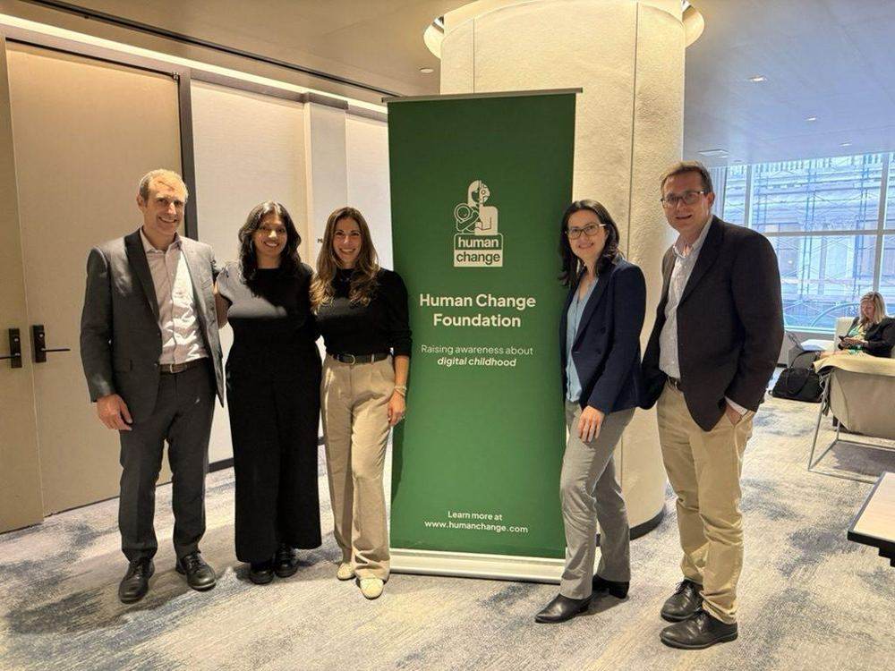

it's not about turning screens off. it's about turning life on
Let's do it together. We work with over two dozen communities and thousands of parents across Massachusetts. Whether you're leading a group in your community, stuck on what comes next, or worried and wondering where to start, we'll meet you where you are with people, funding, resources and experience.
We don't have to let technology reshape childhood.
find your place in this
There's no single right way to be part of this. Pick what fits your life right now. You can always change your mind later.
Community leads
You know your community. We know what's worked in twenty others.Playbooks, funding and a network of parents who've already been where you are.
Existing groups
Our coalition is for all mission-aligned groups in Massachusetts.Regardless of your chapter affiliation, we welcome all Massachusetts-based groups working to change the norms.
Parents & caregivers
Not ready to lead? That's more than okay.Stay in the loop, find ideas that work at home, and add your name when there's a pact or petition that matters.
Partners
Professionals in mental health, education, medicine and tech.Help us build better resources and reach more families.
you don't have to know everything. you just have to care
Leading a local group can feel lonely, especially when the school stops answering your emails. Here's what's behind you.
People
A monthly coalition call, info sessions and in-person meetups with advocates across Massachusetts. Somebody in this network has already hit the wall you're hitting.
Partnerships
We work with the Attorney General's Office, the State House and the Governor's Office, plus national groups and professionals who can speak at your events.
Funding
As a 501(c)(3), we raise money and give it to local groups so good ideas don't stall for lack of a room or a speaker.
the issues
Most parents don't want to get rid of technology. They want it to stop running the show. Here's where we put our energy.
Smartphones and Social Media
More childhood before the phone.We help families wait on smartphones until high school and social media until 16. It's a lot easier when other families in your kid's grade are waiting too, and that's what our community pact is for.
Distraction-free learning
School should be the easy part.Kids deserve a school day where they can focus, and classroom tech that's safe and actually helps them learn. We're advocating for phone-free school days and more intentional tech use in education, when it's necessary and appropriate.
AI and childhood
Powerful, and unsafe for kids.Using AI well takes the judgment to question what it tells you, and that's exactly what kids are still developing. Until AI tools are independently proven safe, effective, equitable and private, they don't belong with students.
Reconnecting our communities
Busy kids don't miss their screens.When kids' days are full of people, play and things they love, screens lose their pull. We help communities host device-free events, play-based gatherings and parent nights that bring people back together.
you're not imagining it
of high schoolers are on social media several times a day or more.
CDC, Youth Risk Behavior Survey, 2023. MMWR, October 2024
Kids who have a smartphone by 12 have higher odds of depression, obesity and poor sleep, and the earlier they get one, the higher the risk of obesity and poor sleep.
Barzilay et al., Pediatrics, December 2025. American Academy of Pediatrics
High school seniors who see friends in person almost every day dropped from 44% to 32% between 2010 and 2022.
Monitoring the Future, University of Michigan, as reported by The Hill, 2023
of American adults now support phones away during class.
None of this means you've done something wrong. It means kids are up against products built to hold their attention, and no parent should have to push back alone.
What's changing
Big tech is losing in the courthouse and the statehouse. Juries have ruled against Meta in California and New Mexico, and Meta has settled with a bipartisan coalition of state attorneys general over designing its apps to hook young users. Massachusetts Attorney General Campbell has said the protections in the settlement are the floor, not the ceiling. Momentum is on our side. Read our Meta Settlement briefing
Both the Massachusetts House and Senate have voted for bell-to-bell phone-free schools, but the final bill is stuck in conference committee. Where Massachusetts stands Take action
New York City and Los Angeles have paused student AI use in schools. Massachusetts should do the same. Sign the petition
Sources: NPR, March 2026; Massachusetts Attorney General's Office, August 2026; Massachusetts Legislature, S.2581; K-12 Dive, September 2026.
where are you feeling stuck?
You don't need a polished plan or more time on your calendar before you reach out. Pick what best describes you, and we'll help you out.
- I'm carrying too much of this alone. Build your team
- We've hit a wall with our school. When they say no
- We're building everything from scratch. Check out our Resources
- I care, but I don't know where to start. The easiest first step
you won't be starting from scratch
Parents in more than 20 Massachusetts communities, from Arlington to Western Mass, are already doing this work.

you bring the concern and we'll help carry what comes next
Tell us a little about where your community is today, and a real person will get back to you.
money turns a good idea into an evening people show up to
Your gift pays for rooms, materials and speakers in communities across Massachusetts. We're a registered 501(c)(3), so it's tax deductible.
- $50 covers materials for a parent night.
- $250 covers the room for a community event.
- $1,000 helps bring a speaker to a community that couldn't book one on its own.